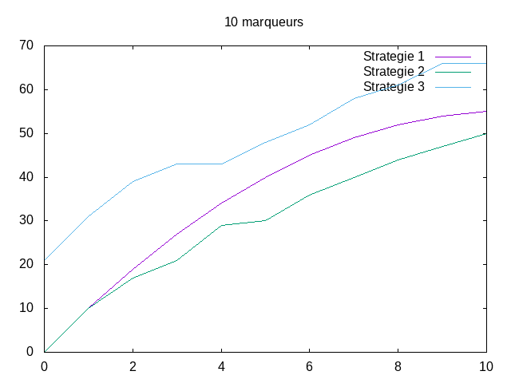
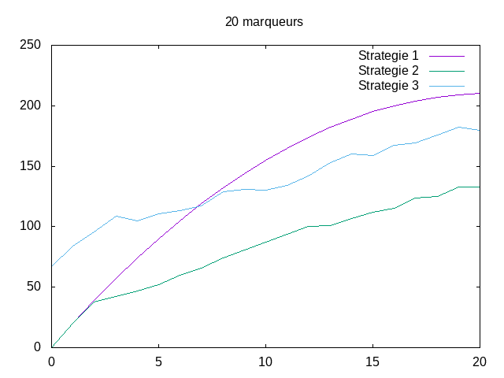
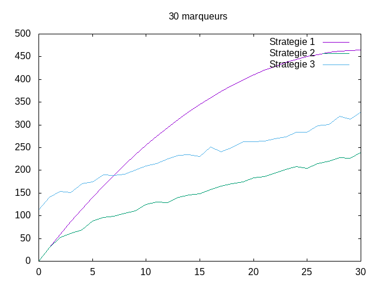
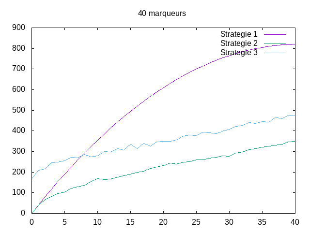
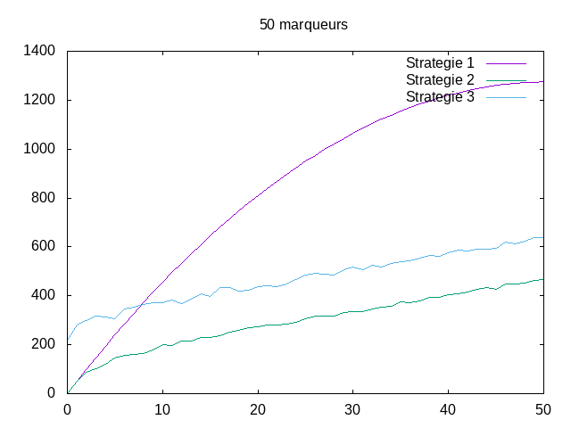
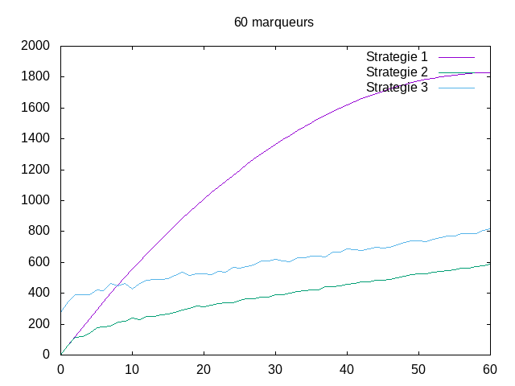
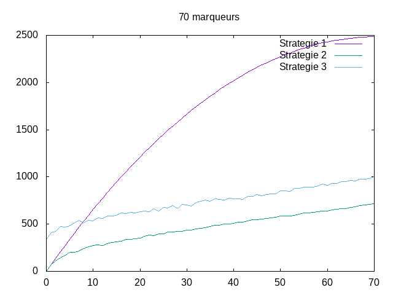
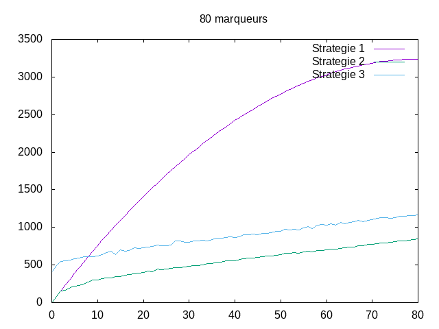
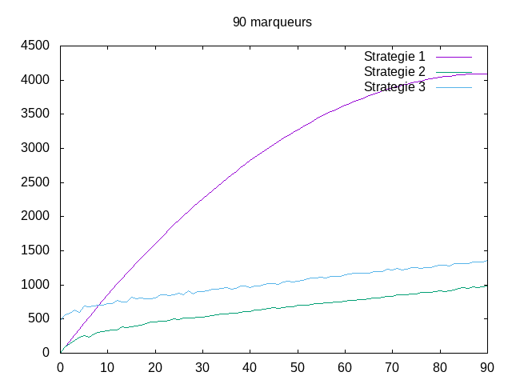
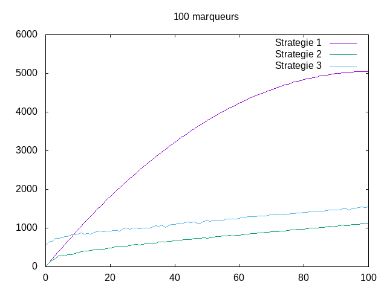

Experimentateur¶
Etat du TP¶
Décrivez ici l’état d’avancement du TP.
Réponses aux questions¶
1.2 STRATÉGIE 1:¶
Question 1.2.1
Voir code de la fontion negative_markers1 (Dans le fichier test.py)
Question 1.2.2
Pour etudier la complexité de l’algorithme de la strategie 1. Nous proposons de compter l’operation de comparaison (compare) OP = compare.
Question 1.2.3
Non, il existe pas de pire cas pour cet algorithme , il existe plutôt un cas général. Car le nombre d’operation de comparaison est identique dans chaqun des cas que nous testons.
Question 1.2.4
soit C1(m,p)le nombre d’OP fait par l’algorithme Nous avons deux cas : cas 1: si p est nul (p=0), dans ce cas C1(m,p)=0 quelque soit la valeur de m (car il y a pas de markers positives donc pas de comparaison ) cas 2: si p est superieur ou égal 1 (p>=1) ===> C1(m,p)= somme des (m-i+1) pour i allant de 1 à p:
p
C1(m,p) = Σ(m-i+1)
i=1
Exemple: Pour m=5 p=3 on a :
p
Σ(m-i+1)=(5-1+1)+(5-2+1)+(5-3+1)=(5+4+3)=12 ====> C1(5,3)=12
i=1
1.3 Stratégie 2:¶
Question 1.3.2
Pire des cas p = m et marqueurs positives classé par ordre décroissant.
Dans notre cas puisque le nombre de comparaison varie selon le choix de l’algorithme dans ce cas nous pouvons trouver une fonction qui se raproche plus ou moins du nombre de comparaison
Donc C2(m,p) = Θ(m*p - (p²-(p*(p-1))/2)) ( On suppose )
Exemple: Pour m=10 p=6 C2(10,6) = 60 - (36-15) = 60-21 = 39
C2(10,6) = Θ(39)
Pour m=10 p=7 C2(10,6) = 70 - (49-21) = 70-28 = 42
C2(10,6) = Θ(42)
On voit que cette formule nous donne une valeur plus proche du nombre de comparaison
1.4 Stratégie 3:¶
Question 1.4.2
Pire des cas p = m et marqueurs et marqueurs positives classé par ordre décroissant.
On constate que la stratégie 2 fait moins de comparaisons que la 3. Ceci est dû au trie qui demande beaucoup plus de comparaisons pour la stratégie 3 car on trie 2 listes au lieu d’une dans la 2.
Donc la strategie 3 est un grand O de la stategie 2 (voir graphique) Dans ce cas:
C3(m,p) = O(C2(m,p))
puisque qu’elle est juste un peu plus grande que le la 2
1.5 Recherche empirique des cas favorables¶
Question 1.5.2
         
{kind=link}
{kind=link}
{kind=link}
{kind=link}
{kind=link}
{kind=link}
{kind=link}
{kind=link}
{kind=link}
{kind=link}
D’après les différents graphiques on remarque une nette différence entre la stratégie 1 et les deux autres stratégies. La stratégie 1 suit la fonction du 1.2.4 tandis que la 2 et 3 sont proches de la fonction logarithme mais influencé par le tri des listes celles-ci varies.